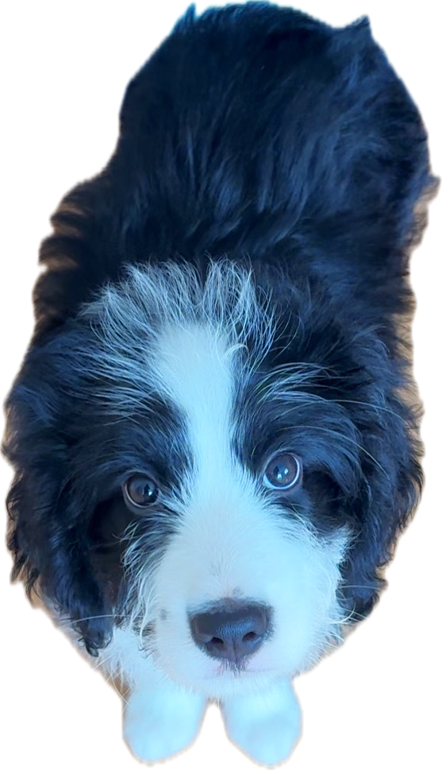
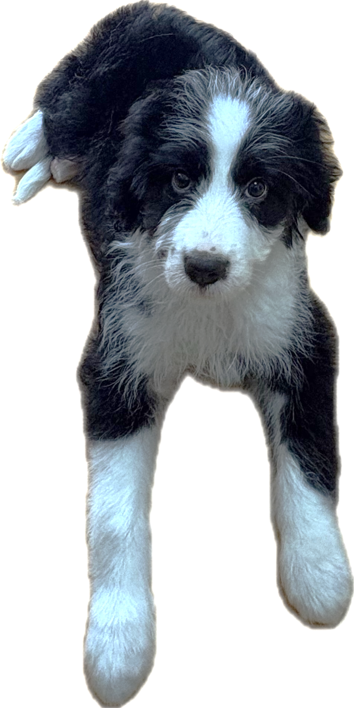
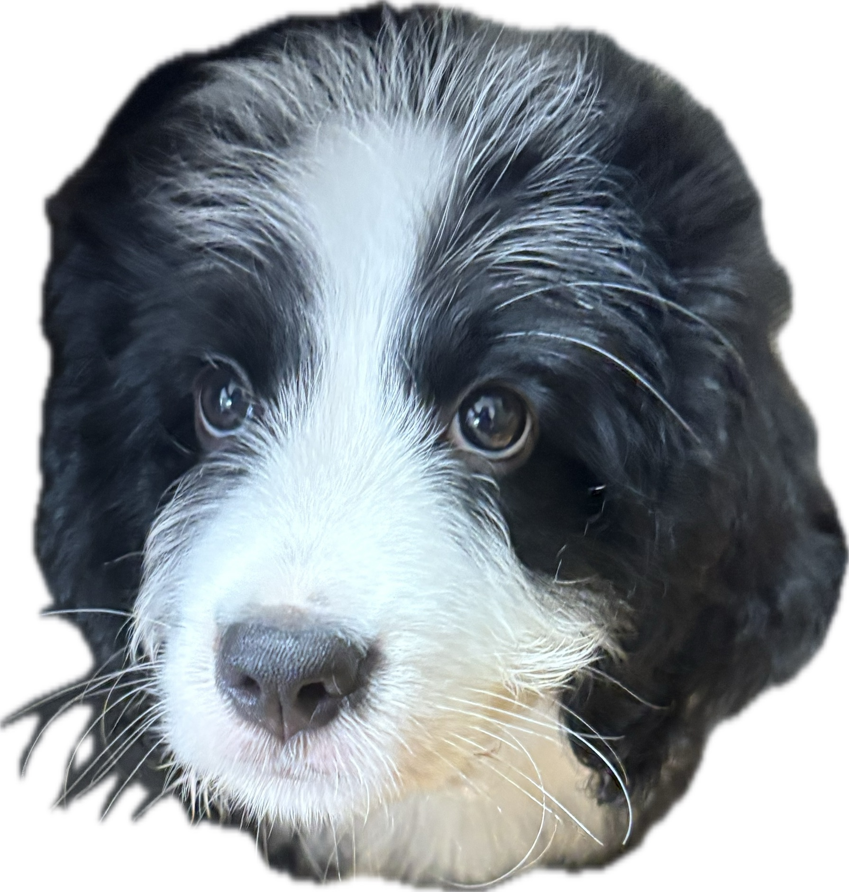
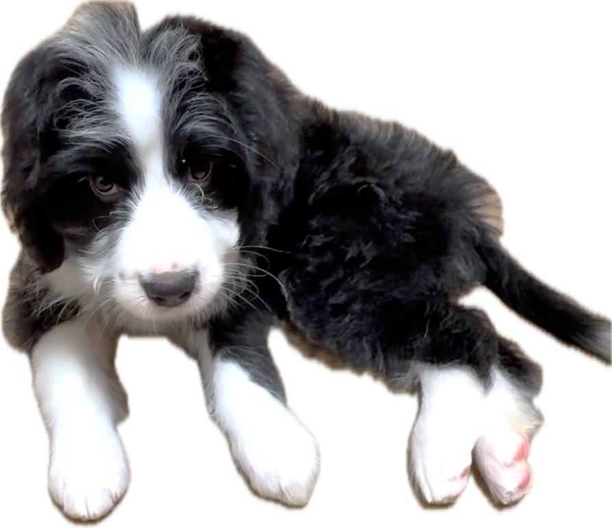
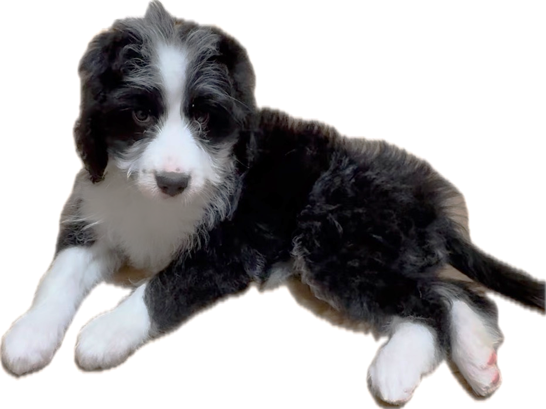

なーな は、まるのおうちの一員です。
犬種：バーニードゥードル
（バーニーズマウンテンドッグ×プードル）
誕生日：2026年7月9日
性別：女の子

なーな は、
ぐり丸の 血の つながった いもうとです。
まだ 赤ちゃんなので、かんばん犬 みならい。
これから いろんなことを まんで
りっぱな かんばん犬に なります。

なーな は、お兄ちゃんの ぐり丸の ことを見て、
ちょっとだけ 「ハウス」や 「ダウン（ふせ）」をすることが できます。
いっしょうけんめい まるのおうちに なれようと がんばっています。

なーな は とっても くいしんぼう。
ぐり丸と おなじ タイミングで たべおわります。
たべおわったら おさらから はなれて おぎょうぎよく しています。

なーな は ぐり丸と あそびたくて たまりません。
ぴょんぴょん はねて、ぐり丸の ところへ かけよります。
でも、赤ちゃんだから すぐ つかれてしまうので、長くは あそべません。
みんな、なーなが 元気に大きく せいちょうするのを みまもってね！